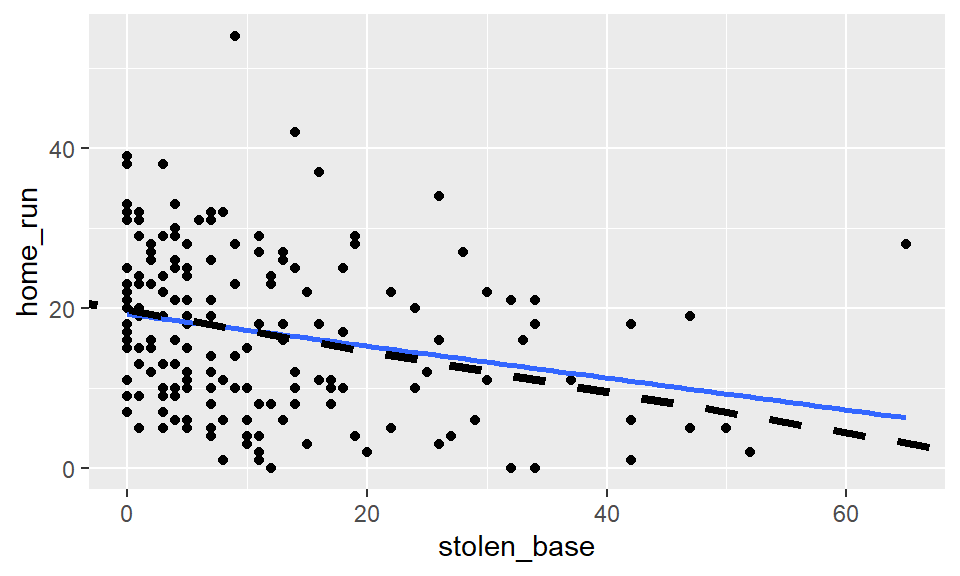

Introduction
Welcome!
In previous lessons, you learned how to fit linear regression models using the method of least squares. You can now create models that predict a response variable based on an explanatory variable, and you understand how the regression line minimizes the sum of squared residuals.
But knowing how to fit a model is only part of the story. When using statistical models, you also need to know how well your model performs. Does it make accurate predictions? How much of the variability in your data does it explain? Are there unusual observations that might be affecting your results?
In this tutorial, you’ll learn how to answer these critical questions by assessing and interpreting the quality of your regression models.
Learning Objectives
By the end of this tutorial, you will be able to:
- Calculate and interpret measures of model accuracy
- Compute the Sum of Squared Errors (SSE)
- Calculate and explain Root Mean Squared Error (RMSE)
- Understand what “residual standard error” means in practical terms
- Assess overall model fit
- Compute the coefficient of determination (R²)
- Interpret R² as the proportion of variance explained
- Understand the relationship between R² and correlation
- Recognize the limitations of relying solely on R²
- Identify and evaluate unusual observations
- Distinguish between leverage and influence
- Calculate leverage scores using the
.hatstatistic - Measure influence using Cook’s distance
- Understand when an outlier affects your model
- Make informed decisions about outliers
- Evaluate whether removing an outlier is justified
- Consider how outlier removal changes the scope of inference
- Act with scientific integrity when handling unusual data points
Let’s get started! ⚾
Assessing model fit
How well does our textbook model fit?
Now that we understand what linear regression models are and how they work, a natural next question is to consider how well they work. In an intuitive sense, it seems clear that the regression line for the textbooks fits really well.
ggplot(data = textbooks, aes(x = amaz_new, y = ucla_new)) +
geom_point() +
geom_smooth(method = "lm", se = FALSE)How well does our possum model fit?
At the same time, the regression line for the possums fits less well, but it still seems useful.
ggplot(data = possum, aes(y = total_l, x = tail_l)) +
geom_point() +
geom_smooth(method = "lm", se = FALSE)Can we quantify our intuition about the quality of the model fit?
Sums of squared deviations
In fact we can. Recall that we initially considered any number of lines. We settled on the unique regression line by applying the least squares criterion. That is, we found the line that minimizes the sum of the squared residuals. For each observation–which is represented on the scatterplot by a point–the residual is simply the vertical distance between that point and the line.
Here, we have highlighted the possum residuals with gray arrows. If we could find a line that made those gray arrows shorter –collectively, and after squaring them–that would be our regression line; but there is no such line: this one is the best.
Note that we can’t just minimize the sum of the residuals. That number is always zero, since the positive and negative residuals cancel each other out when added together.
The sum of the squares works well mathematically, but it also has the effect of penalizing large residuals disproportionately. This is generally considered a useful property for statistical modeling, since you would usually prefer a model that misses often by a little bit, but never by a lot; to a model that works well most of the time but occasionally is way off. Once again, there are situations when other criteria are used for fitting models, but we won’t talk about them in this tutorial.
Measures of model fit
One way to assess strength of fit is to consider how far off the model is for a typical case. That is, for some observations, the fitted value will be very close to the actual value, while for others it will not. The magnitude of a typical residual can give us a sense of generally how close our estimates are.
SSE
Recall that some of the residuals are positive, while others are negative. In fact, it is guaranteed by the least squares fitting procedure that the mean of the residuals is zero. Thus, it makes more sense to compute the square of the residuals.
After using the augment() function to tidy up our model,
the sum of the squared residuals is easily computed using
summarize(). By convention, we often call this quantity
SSE, for sum of squared
errors. It can also be computed as the variance of the
residuals times one fewer than the number of observations.
Keep in mind the column of the augment()-ed model we are
interested in is named .resid. The period before it is part
of its name and must be included!
total_tail_mod |>
augment() |>
summarize(SSE = sum(.resid^2),
SSE_also = (n() - 1) * var(.resid))RMSE
The SSE is a single number that captures how much our model missed by. Unfortunately, it is hard to interpret, since the units have been squared. Thus, another common way of thinking about the accuracy of a model is the root mean squared error or RMSE.
The RMSE is essentially the standard deviation of the residuals. You might expect us to divide by \(n\) here, but we instead divide by the number of degrees of freedom, which in this case is \(n-2\). The concept of degrees of freedom comes up in many contexts in statistics, but a fuller discussion is beyond the scope of this tutorial.
\[ RMSE = \sqrt{ \frac{\sum_i{e_i^2}}{d.f.} } = \sqrt{ \frac{SSE}{n-2} } \]
The RMSE also generalizes to any kind of model for a single numerical response, so it is not specific to regression models.
Residual standard error (possums)
When R displays the summary() of a regression model, it
displays the “residual standard error”. This is the RMSE. Conveniently,
the RMSE is in the units of the response, so this says that our model
makes a predicted body length that is typically within about 3.57
centimeters of the truth. That seems useful, since the possums in our
data set are between 75 and 96 centimeters.
summary(total_tail_mod)##
## Call:
## lm(formula = total_l ~ tail_l, data = possum)
##
## Residuals:
## Min 1Q Median 3Q Max
## -9.2100 -2.3265 0.1792 2.7765 6.7900
##
## Coefficients:
## Estimate Std. Error t value Pr(>|t|)
## (Intercept) 41.0371 6.6568 6.165 1.43e-08 ***
## tail_l 1.2443 0.1796 6.927 3.94e-10 ***
## ---
## Signif. codes: 0 '***' 0.001 '**' 0.01 '*' 0.05 '.' 0.1 ' ' 1
##
## Residual standard error: 3.572 on 102 degrees of freedom
## Multiple R-squared: 0.32, Adjusted R-squared: 0.3133
## F-statistic: 47.99 on 1 and 102 DF, p-value: 3.935e-10Residual standard error (textbooks)
For the textbooks, the residual standard error is $10.47. Somehow this doesn’t seem as useful–and yet it seemed from the scatterplot that the fit of the textbook model was much better than the fit of the possum model. Reconciling these two notions will be up next.
books_mod <- lm(ucla_new ~ amaz_new, data = textbooks)
summary(books_mod)##
## Call:
## lm(formula = ucla_new ~ amaz_new, data = textbooks)
##
## Residuals:
## Min 1Q Median 3Q Max
## -34.785 -4.574 0.577 4.012 39.002
##
## Coefficients:
## Estimate Std. Error t value Pr(>|t|)
## (Intercept) 0.92897 1.93538 0.48 0.633
## amaz_new 1.19900 0.02519 47.60 <2e-16 ***
## ---
## Signif. codes: 0 '***' 0.001 '**' 0.01 '*' 0.05 '.' 0.1 ' ' 1
##
## Residual standard error: 10.47 on 71 degrees of freedom
## Multiple R-squared: 0.9696, Adjusted R-squared: 0.9692
## F-statistic: 2266 on 1 and 71 DF, p-value: < 2.2e-16You’ll work with residuals on your own in the next exercises.
RMSE
The residual standard error reported for the regression model for poverty rate of U.S. counties in terms of high school graduation rate is 4.67.
Your turn!
You can recover the residuals from wgt_hgt_mod with
residuals(), and the degrees of freedom with
df.residual(). Use these components to compute the RMSE of
the wgt_hgt_mod.
- View a
summary()ofwgt_hgt_mod. - Compute the mean of the
residuals()and verify that it is approximately zero. - Use
residuals()anddf.residual()to compute the root mean squared error (RMSE), a.k.a. residual standard error.
# View summary of model
___(wgt_hgt_mod)
# Compute the mean of the residuals
mean(___(wgt_hgt_mod))
# Compute RMSE
sqrt(sum(residuals(___)^2) / df.residual(___)) RMSE is calculated as the sum of squared residuals divided by the degrees of freedom of the model: `sqrt(sum(residuals(wgt_hgt_mod)^2) / df.residual(wgt_hgt_mod))`# View summary of model
summary(wgt_hgt_mod)
# Compute the mean of the residuals
mean(residuals(wgt_hgt_mod))
# Compute RMSE
sqrt(sum(residuals(wgt_hgt_mod)^2) / df.residual(wgt_hgt_mod))Comparing model fits
How well does our textbook model fit?
Previously, you learned about how we could use the sum of the squared residuals to quantify how well our model fit the data. However, we noted that although the textbook model seemed to fit the data really well, the residual standard error was more than $10.

How well does our possum model fit?
On the other hand, the residual standard error for the possum model was about 3.5 cm, which seems like a high degree of accuracy, for a model that does not seem to be as tight of a fit.

Null (average) model
It’s hard to compare $10 to 3.5 centimeters. Which is “bigger”? What would be nice is if we had a way to compare the quality of a model’s fit that was unitless. To do so, it is helpful to think about a benchmark.
If you had to predict the body length of a possum, and you didn’t have any information about that particular possum, what would your prediction be? Let’s pause for a second and think.
A sensible choice would be the average length of all possum. And in fact, if you have to make the same prediction for every possum, the average is the best number you can pick. We can think about this as a model where \(\hat{y}\) (the predicted value of \(y\)) is equal to \(\bar{y}\) (the average value of \(y\)).
Visualization of null model
This model is often called the null model. This model makes sense to use as a benchmark, since it doesn’t require any insight to make, and yet there is no reasonable model that could be any worse. It looks like this:
SSE of the null model
We can fit the null model in R using lm(), but including
only the constant 1 as our explanatory variable. This results in an SSE
value of 1913.826.
null_mod |>
augment(possum) |>
summarize(SST = sum(.resid^2))SSE, our model
Compare this number to the SSE for our possum model that uses tail length as an explanatory variable. The SSE in this case is 1301.488.
total_tail_mod |>
augment() |>
summarize(SSE = sum(.resid^2))Coefficient of determination
The ratio of the SSE for our model to the SSE for the null model is a quantification of the variability explained by our model. More specifically, the SSE for the null model is often called SST, for the total sum of the squares. This is a measure of the variability in the response variable.
By building a regression model, we hope to explain some of that variability. The portion of the SST that is not explained by our model is the SSE. These ideas are captured by this formula for the “coefficient of determination,” usually referred to as \(R^2\).
\[ R^2 = 1 - \frac{SSE}{SST} = 1 - \frac{Var(e)}{Var(y)} \,, \]
Due to this definition, we interpret \(R^2\) as the proportion of the variability in the response variable that is explained by our model. It is the most commonly cited measure of the quality of the fit of a regression model.
Connection to correlation
We have already seen a connection between the value of the correlation between \(X\) and \(Y\) and the slope of the regression line. In fact, the value of the correlation coefficient is also closely related to the value of \(R^2\). For least squares regression models with a single explanatory variable, the value of \(R^2\) is just the square of the correlation coefficient (\(r_{x, y}^2\)).
Why then, do we need both concepts? Correlation is strictly a bivariate quantity, it can only be between a single response and a single explanatory variable. However, regression is a much more flexible modeling framework. Each regression model has its own value of \(R^2\), but in future lessons you will learn how such models can incorporate many explanatory variables, unlike correlation.
The \(R^2\) gives us a numerical measurement of the strength of fit of our linear regression relative to a null model based on the average of the response variable (\(\hat{y}_{null} = \bar{y}\)).
The null model has an \(R^2\) of zero because \(SSE = SST\). That is, since the fitted values (\(\hat{y}_{null}\)) are all equal to the average (\(\bar{y}\)), the residual for each observation is the distance between that observation and the mean of the response. Since we can always fit the null model, it serves as a baseline against which all other models will be compared.
Summary
The easiest way to see the \(R^2\)
value is to apply the summary() function to your model
object. In this case, we see that our model based on tail length
explains about 32% of the variability in body length for these
possums.
summary(total_tail_mod)##
## Call:
## lm(formula = total_l ~ tail_l, data = possum)
##
## Residuals:
## Min 1Q Median 3Q Max
## -9.2100 -2.3265 0.1792 2.7765 6.7900
##
## Coefficients:
## Estimate Std. Error t value Pr(>|t|)
## (Intercept) 41.0371 6.6568 6.165 1.43e-08 ***
## tail_l 1.2443 0.1796 6.927 3.94e-10 ***
## ---
## Signif. codes: 0 '***' 0.001 '**' 0.01 '*' 0.05 '.' 0.1 ' ' 1
##
## Residual standard error: 3.572 on 102 degrees of freedom
## Multiple R-squared: 0.32, Adjusted R-squared: 0.3133
## F-statistic: 47.99 on 1 and 102 DF, p-value: 3.935e-10What about the textbooks?
For the textbooks, the \(R^2\) value is much higher – here we can explain 97% of the variability in UCLA price using price on Amazon. Indeed, the \(R^2\) comparison helps to confirm our graphical intuition that the textbook model is a better fit to the textbook data than the possum model is the possum data.
books_mod <- lm(ucla_new ~ amaz_new, data = textbooks)
summary(books_mod)##
## Call:
## lm(formula = ucla_new ~ amaz_new, data = textbooks)
##
## Residuals:
## Min 1Q Median 3Q Max
## -34.785 -4.574 0.577 4.012 39.002
##
## Coefficients:
## Estimate Std. Error t value Pr(>|t|)
## (Intercept) 0.92897 1.93538 0.48 0.633
## amaz_new 1.19900 0.02519 47.60 <2e-16 ***
## ---
## Signif. codes: 0 '***' 0.001 '**' 0.01 '*' 0.05 '.' 0.1 ' ' 1
##
## Residual standard error: 10.47 on 71 degrees of freedom
## Multiple R-squared: 0.9696, Adjusted R-squared: 0.9692
## F-statistic: 2266 on 1 and 71 DF, p-value: < 2.2e-16Over-reliance on \(R^2\)
While \(R^2\) is certainly a useful and ubiquitous measure of model fit, it is not the be-all-and-end-all of statistical modeling. A high \(R^2\) alone doesn’t mean that you have a “good” model, and low \(R^2\) doesn’t mean that you have a lousy model. A model with a high \(R^2\) may be overfit, or it may violate the conditions for inference that we will discuss in a later lesson. A model with a low \(R^2\) can still provide substantial insight into a complex problem.
We’ll close by invoking the words of famed statistician George Box:
“Essentially, all models are wrong, but some are useful”.
Now it’s time for you to assess model fit on your own.
Your turn!
Recall that the coefficient of determination (\(R^2\)), can be computed as \[ R^2 = 1 - \frac{SSE}{SST} = 1 - \frac{Var(e)}{Var(y)} \,, \] where \(e\) is the vector of residuals and \(y\) is the response variable. This gives us the interpretation of \(R^2\) as the percentage of the variability in the response that is explained by the model, since the residuals are the part of that variability that remains unexplained by the model.
The wgt_hgt_augment dataframe is the result of
augment()-ing the wgt_hgt_mod linear
regression model. In this exercise you will use this augmented dataframe
to calculate the \(R^2\) of the
model.
- Use the
summary()function to assess what the \(R^2\) value ofwgt_hgt_modis. - Use the
wgt_hgt_augmentdataframe to compute the \(R^2\) ofwgt_hgt_modmanually using the formula above. Hint:wgtis the response variable in this linear regression!
# View model summary
# Compute R-squared
wgt_hgt_augment |>
summarize(var_y = ___,
var_e = ___) |>
mutate(R_squared = ___)# Remember: var_y should be the variance of the response variable (wgt)
# and var_e should be the variance of the residuals (.resid)
wgt_hgt_augment |>
summarize(var_y = var(wgt),
var_e = var(.resid)) |>
mutate(R_squared = ___)wgt_hgt_augment |>
summarize(var_y = var(wgt),
var_e = var(.resid)) |>
mutate(R_squared = ___ - (var_e / var_y))# View model summary
summary(wgt_hgt_mod)
# Compute R-squared
wgt_hgt_augment |>
summarize(var_y = var(wgt),
var_e = var(.resid)) |>
mutate(R_squared = 1 - var_e / var_y)Interpretation of \(R^2\)
The \(R^2\) reported for the regression model for poverty rate of U.S. counties in terms of high school graduation rate is 0.464.
lm(formula = poverty_2010 ~ hs_grad_2010, data = county_complete) |>
summary()##
## Call:
## lm(formula = poverty_2010 ~ hs_grad_2010, data = county_complete)
##
## Residuals:
## Min 1Q Median 3Q Max
## -18.035 -3.033 -0.434 2.407 36.875
##
## Coefficients:
## Estimate Std. Error t value Pr(>|t|)
## (Intercept) 64.59504 0.94632 68.26 <2e-16 ***
## hs_grad_2010 -0.59076 0.01134 -52.08 <2e-16 ***
## ---
## Signif. codes: 0 '***' 0.001 '**' 0.01 '*' 0.05 '.' 0.1 ' ' 1
##
## Residual standard error: 4.677 on 3140 degrees of freedom
## Multiple R-squared: 0.4635, Adjusted R-squared: 0.4633
## F-statistic: 2713 on 1 and 3140 DF, p-value: < 2.2e-16Unusual points
In our previous discussion of outliers, we learned how to identify points that seem to be unusual. Now, we will refine that understanding by introducing two related but distinct concepts: leverage and influence.
Recall the data we examined previously about Major League Baseball players during the 2010 season. We considered the relationship between the number of home runs hit by each player, and the corresponding number of bases that each player stole. The first statistic is a measurement of power, while the latter is a measurement of speed. As these skills are considered complementary, it should not be surprising that a simple linear regression model has a negative slope. In this case, we have fit the model to only those players with at least 400 at-bats, in a simple attempt to control for the confounding influence of playing time.
regulars <- mlbbat10 |>
filter(at_bat > 400)
ggplot(data = regulars, aes(x = stolen_base, y = home_run)) +
geom_point() +
geom_smooth(method = "lm", se = 0)We noted previously that there were two potential outliers here: the point corresponding to the slugger Jose Bautista in the upper left, and the point belonging to speedster Juan Pierre in the lower right.
Now that we have a regression model, we want to think about how individual observations might affect the slope of the line. Typically, the purpose of interpreting the slope coefficient is to learn about the overall relationship between the two variables, so it doesn’t necessarily make sense if one or two individual observations have a disproportionate effect on that slope. Unfortunately, such points of high leverage are quite common.
Leverage
Leverage has a precise mathematical definition that you can see here. The specifics of the formula are not so important, but you should recognize that the leverage score \(h_i\) for an observation is entirely a function of the distance between each individual value of the explanatory variable and mean of the explanatory variable. This means that points that are close to the center of the scatterplot (along the x-axis) have low leverage, while points that are far from the (horizontal) center of the scatterplot have high leverage. For leverage, the \(y\)-coordinate doesn’t matter at all.
\[ h_i = \frac{1}{n} + \frac{(x_i - \bar{x})^2}{\sum_{i=1}^n (x_i - \bar{x})^2} \]
Leverage computations
It should not be surprising then, that the player with the largest
leverage value is the aforementioned Juan Pierre (in the lower
right-hand corner of the plot). The leverage scores can be retrieved
using the augment() function, and then examining the
.hat variable. [The name comes from the historical
convention of computing leverage from the “hat” matrix.] Note that the
leverage scores depend only on stolen bases. In this case, Pierre’s
leverage score is nearly twice as large as that of the next player.
The slice_max() allows for you to both
order a dataframe and select how many entries you wish to keep. The
order_by argument allows for you to specify what variable
to order by (similar to arrange()), and the n
argument allows for you to specify how many rows you wish to keep.
Pretty neat!
mod_hr_sb <- lm(home_run ~ stolen_base, data = regulars)
mod_hr_sb |>
augment() |>
dplyr::select(home_run, stolen_base, .hat) |>
slice_max(order_by = .hat,
n = 5)Observations of high leverage, by virtue of their extreme values of the explanatory variable, may or may not have a considerable effect on the slope of the regression line. An observation that does have such an effect is called “influential.” In our case, the regression line is very close to the point corresponding to Juan Pierre. So, even though this is a high leverage observation, it is not considered influential.
Consider Rickey Henderson…
However, suppose that there was a player with a similar number of stolen bases, but a decent number of home runs as well. In fact, Hall of Famer Rickey Henderson was such a player, and in his MVP-winning season of 1990, he stole 65 bases while hitting 28 home runs. Let’s add this observation to our plot.

The original regression line is plotted as the dashed black line, and the new regression line (with Rickey Henderson) is plotted as a solid blue line. Notice how the new regression line pulls upward ever so slightly from the previous dotted regression line. This is a direct result of Henderson’s influence.
Because this is a point of high leverage, it has the ability to pull the slope of the regression line up. However, unlike the point corresponding to Pierre, the point corresponding to Henderson also has a large residual. The combination of high leverage and large residual determine influence.
Influence via Cook’s distance
In fact, a measurement known as Cook’s distance combines these two
quantities (leverage and residual) to measure influence. These figures
are also reported by the augment() function. We note here
that the observation corresponding to Henderson has a large residual,
high leverage, and by far the largest value of Cook’s distance.
mod_hr_sb <- lm(home_run ~ stolen_base, data = regulars_plus)
mod_hr_sb |>
augment() |>
dplyr::select(home_run, stolen_base, .fitted, .resid, .hat, .cooksd) |>
slice_max(order_by = .cooksd,
n = 5)You’ll explore some more outliers in these next exercises.
Outlier Removal Checklist
Before removing any observation, ask:
- Is there a data entry error? (Check the source)
- Does the observation represent a different population? (Different scope)
- Is there a measurement error or equipment malfunction? (Check the data collection)
- Does removing it fundamentally change your research question/interpretation?
✅ Good reasons: Data errors, different population, measurement issues ❌ Bad reasons: “It doesn’t fit my hypothesis”, “It lowers my R²”
Your turn!
The leverage of an observation in a regression model is defined entirely in terms of the distance of that observation from the mean of the explanatory variable. That is, observations close to the mean of the explanatory variable have low leverage, while observations far from the mean of the explanatory variable have high leverage. Points of high leverage may or may not be influential.
The augment() function from the broom
package automatically adds the leverage scores (.hat) to a
model dataframe. Use augment() to list the top 6
observations by their leverage scores, in descending order.
# Rank points of high leverage
mod_slg_obp |>
___ |>
slice_max(order_by = ___,
n = ___)# Rank points of high leverage
mod_slg_obp |>
augment() |>
slice_max(order_by = ___,
n = ___)# Rank points of high leverage
mod_slg_obp |>
augment() |>
slice_max(order_by = .hat,
n = ___)# Rank points of high leverage
mod_slg_obp |>
augment() |>
slice_max(order_by = .hat,
n = 6)Influence
As noted previously, observations of high leverage may or may not be influential. The influence of an observation depends not only on its leverage, but also on the magnitude of its residual. Recall that while leverage only takes into account the explanatory variable (\(x\)), the residual depends on the response variable (\(y\)) and the fitted value (\(\hat{y}\)).
Influential points are likely to have high leverage and deviate from the general relationship between the two variables. We measure influence using Cook’s distance, which incorporates both the leverage and residual of each observation.
Use augment() and slice_max() to list the
top 6 observations by their Cook’s distance (.cooksd).
# Rank influential points Take a peek at the previous exercise, and note that this time we want to arrange the output by `.cooksd` this time!# Rank influential points
mod_slg_obp |>
augment() |>
slice_max(order_by = .cooksd,
n = 6)Dealing with outliers
Previously, we learned about how leverage and influence can help us understand how outliers affect our regression model. Suppose you have determined that an influential observation is affecting the slope of your regression line in a way that undermines the scientific merit of your model. What can you do about it?
The short answer is that there isn’t much you can do about it other than removing the outliers. As the statistical modeller, this is a decision you can make, but it’s crucial that you understand the ramifications of this decision and act in good scientific faith.
The full model
In the full model of all the regular players from 2010 and Rickey Henderson from 1990, the slope of the regression line was -0.21 home runs per stolen base. In other words, players who steal five extra bases hit about one fewer home run, on average.
lm(home_run ~ stolen_base, data = regulars_plus) |>
coef()## (Intercept) stolen_base
## 19.3282493 -0.2085899Removing outliers that don’t fit
Now, in this case, there is an easy argument that Rickey Henderson does not fit with the rest of these data. It is a bit of a contrived argument, since we added him previously for effect, but nonetheless there are good reasons to assert that Henderson doesn’t belong. If we remove him, note how the slope of the regression line decreases. Now, it’s only four extra stolen bases that are associated with hitting one fewer home run.
## (Intercept) stolen_base
## 19.7168513 -0.2549133Remember that when removing outliers, the first questions you should ask yourself are:
- What is the justification for removing the observation?
- How does the scope of inference change?
Anytime you are thinking about removing outliers, you should ask yourself what the justification is. “Because it improves my results” is not a good justification. Indeed, conscious ignorance of valid data is not intellectually honest, and has been the cause of more than a few retractions of previously published scientific papers. Be skeptical. The burden of proof is on you to make a strong argument as to why data should be omitted.
Second, you must consider how this changes the scope of inference. If you are studying countries, are you omitting only the poorest countries? If so, then your results no longer apply to all countries, just non-poor countries. Misunderstanding how the scope of inference changes can be a fatal flaw in your analysis.
Removing outliers that do fit
With Henderson out of the way, we could consider removing Juan Pierre as well. Here, there really aren’t any good arguments as to why this should be done. First, the point is not influential, so whether we include it or not, it won’t affect our results much. More importantly, because Juan Pierre was just a regular major league player in 2010, there is no reason to think that he somehow doesn’t belong to the larger group of players. What is so special about Juan Pierre that would lead us to exclude him? If, hypothetically, he was a pitcher, or he was 60 years old, or he only had one arm, then you could try and make that case. But there is nothing like that going on here, and so we have no scientific reason to exclude him.
Again, ask yourself:
- What is the justification for removing the observation?
- How does the scope of inference change?
regulars_new <- regulars |>
filter(stolen_base < 60)
lm(home_run ~ stolen_base, data = regulars_new) |>
coef()## (Intercept) stolen_base
## 19.6869686 -0.2514133Now it’s time to deal with some outliers on your own.
Your turn!
Observations can be outliers for a number of different reasons. Statisticians must always be careful—and more importantly, transparent—when dealing with outliers. Sometimes, a better model fit can be achieved by simply removing outliers and re-fitting the model. However, one must have strong justification for doing this. A desire to have a higher \(R^2\) is not a good enough reason!
In the mlbbat10 data, the outlier with an
obp of 0.550 is Bobby Scales, an
infielder who had four hits in 13 at_bats for the Chicago
Cubs. Scales also walked seven times, resulting in his unusually high
obp. The justification for removing Scales here is weak.
While his performance was unusual, there is nothing to suggest that it
is not a valid data point, nor is there a good reason to think that
somehow we will learn more about Major League Baseball players by
excluding him.
Nevertheless, we can demonstrate how removing him will affect our model.
- Use
filter()to create a new dataset namednontrivial_playersconsisting of the players frommlbbat10with at least 10at_bats and andobpof below 0.500. - Create a scatterplot with
obpon the y-axis andat_baton the x-axis for both the new and old datasets
# Create nontrivial_players
nontrivial_players <- mlbbat10 |>
___(___)
# Visualize new model
ggplot(data = nontrivial_players,
aes(x = ___, y = ___)) +
___ +
___
# Visualize old model
ggplot(data = mlbbat10,
aes(x = ___, y = ___)) +
___ +
___nontrivial_players <- mlbbat10 |>
filter(at_bat >= 10,
obp < 0.5)ggplot(data = nontrivial_players, aes(x = at_bat, y = obp)) +
geom_point() +
geom_smooth(___)ggplot(data = mlbbat10, aes(x = at_bat, y = obp)) +
geom_point() +
geom_smooth(method = "lm")nontrivial_players <- mlbbat10 |>
filter(at_bat >= 10,
obp < 0.5)
ggplot(data = nontrivial_players, aes(x = at_bat, y = obp)) +
geom_point() +
geom_smooth(method = "lm")
ggplot(data = mlbbat10, aes(x = at_bat, y = obp)) +
geom_point() +
geom_smooth(method = "lm")Next, let’s compare the models for these two datasets.
- Fit the linear model for
at_batas a function ofobpfor thenontrivial_players. Save this linear model asmod_cleaner. - Fit the linear model for
at_batas a function ofobpfor themlbbat10. Save this linear model asmod_original. - View the
summary()of the new model and compare the slope and \(R^2\) to the original model fit to the data on all players.
# Fit a model to new data
mod_cleaner <- lm(___ ~ ___, data = ___)
# Fit a model to the original data
mod_original <- lm(___ ~ ___, data = ___)
# View the new model's summary
summary(___)
# View the original model's summary
summary(___)mod_cleaner <- lm(at_bat ~ obp, data = nontrivial_players)mod_original <- lm(at_bat ~ obp, data = mlbbat10)summary(mod_cleaner)
summary(mod_original)mod_cleaner <- lm(at_bat ~ obp, data = nontrivial_players)
mod_original <- lm(at_bat ~ obp, data = mlbbat10)
summary(mod_cleaner)
summary(mod_original)Congratulations!
Key Takeaways
Reflect on what you’ve learned:
- RMSE tells you typical prediction error in original units
- R² tells you the proportion of variance explained (0-1 scale)
- Leverage depends only on x-values (distance from mean)
- Influence combines leverage AND residual size
- Remove outliers only with strong justification - document your reasoning!
You have successfully completed this activity. You need to generate a hash for submission, click “Next Topic”, generate the hash, and submit it on Blackboard.
Submit
Check Your Progress
Click the button below to see how many required exercises you have completed.